Lógica, programación y demostración
Publicado el 12 de febrero de 2024 por José A. Alonso
Índice
- 1. Introducción
- 2. Regla de eliminación del condicional
- 3. Regla introducción del condicional
- 4. Reglas de la conjunción
- 5. Reglas de la negación
- 5.1. Reglas de la negación en deducción natural
- 5.2. Pruebas de ⊥ ⊢ P
- 5.3. Correspondencia entre Lógica y Haskell
- 5.4. Pruebas de la eliminación de la negación P, ¬P ⊢ ⊥
- 5.5. Correspondencia entre Lógica y Haskell
- 5.6. Pruebas de ¬(P ∧ ¬P)
- 5.7. Pruebas de P → Q, P → ¬Q ⊢ ¬P
- 5.8. Pruebas del modus tollens: P → Q, ¬Q ⊢ ¬P
- 5.9. Pruebas de P → (Q → R), P, ¬R ⊢ ¬Q
- 5.10. Regla de introducción de la doble negación: P ⊢ ¬¬P
- 5.11. Pruebas de ¬Q → ¬P ⊢ P → ¬¬Q
- 6. Reglas de la disyunción
- 6.1. Pruebas de la introducción de la disyunción
- 6.2. Correspondencia entre Lógica y Haskell
- 6.3. Pruebas de P ∧ Q ⊢ P ∨ R
- 6.4. Pruebas de P ∧ Q ⊢ R ∨ Q
- 6.5. Regla de eliminación de la disyunción
- 6.6. Correspondencia entre Lógica y Haskell
- 6.7. Pruebas de P ∨ Q ⊢ Q ∨ P
- 6.8. Pruebas de Q → R ⊢ P ∨ Q → P ∨ R
- 6.9. Pruebas de ¬P ∨ Q ⊢ P → Q
- 7. Reglas de la lógica clásica
- 7.1. Pruebas con Lean de la eliminación de la doble negación
- 7.2. uPruebas con Lean de la regla de reducción al absurdo
- 7.3. Pruebas con Lean del principio del tercio excluso
- 7.4. Pruebas con Lean de P → Q ⊢ ¬P ∨ Q
- 7.5. Pruebas con Lean de P, ¬¬(Q ∧ R) ⊢ ¬¬P ∧ R
- 7.6. Pruebas con Lean de ¬P → Q, ¬Q ⊢ P
- 7.7. Pruebas con Lean de (Q → R) → ((¬Q → ¬P) → (P → R))
1. Introducción
- Mostrar las relaciones entre
- las demostraciones por deducción natural de la asignatura de lógica informática. concretamente, las del tema 2 deducción natural proposicional.
- la definición de las funciones en haskell del curso de informática.
- las demostraciones automatizadas del curso de razonamiento automático.
2. Regla de eliminación del condicional
2.1. Pruebas de P → Q, P ⊢ Q
- Regla de eliminación del condicional en lógica: P → Q, P ⊢ Q
- Pruebas con Lean de P → Q, P ⊢ Q
import Mathlib.Tactic variable (P Q : Prop) -- 1ª demostración example (h1 : P → Q) (h2 : P) : Q := by tauto -- 2ª demostración example (h1 : P → Q) (h2 : P) : Q := by apply h1 -- ⊢ P exact h2 -- 3ª demostración example (h1 : P → Q) (h2 : P) : Q := h1 h2
ej_cond_1 :: (p -> q) -> p -> q ej_cond_1 h1 h2 = h1 h2 ej_cond_1' :: (p -> q) -> p -> q ej_cond_1' = \ h1 h2 -> h1 h2 -- λ> :t ej_cond_1 -- ej_cond_1 :: (p -> q) -> p -> q -- λ> :t ej_cond_1' -- ej_cond_1' :: (p -> q) -> p -> q
2.2. Correspondencia entre Lógica y Haskell
| Lógica | Haskell |
|---|---|
| Proposiciones | Tipos |
| P -> Q | P -> Q |
| (E→) f : P → Q, p : P ⊢ Q | f p |
2.3. Pruebas de P, P → Q, P → (Q → R) ⊢ R
- Prueba por deducción natural
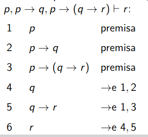
import Mathlib.Tactic variable (P Q R : Prop) -- 1ª demostración example (h1 : P) (h2 : P → Q) (h3 : P → (Q → R)) : R := by have h4 : Q := h2 h1 have h5 : Q → R := h3 h1 show R exact h5 h4 -- 2ª demostración example (h1 : P) (h2 : P → Q) (h3 : P → (Q → R)) : R := (h3 h1) (h2 h1)
ej_cond_2 :: p -> (p -> q) -> (p -> (q -> r)) -> r ej_cond_2 h1 h2 h3 = (h3 h1) (h2 h1) -- λ> :t ej_cond_2 -- ej_cond_2 :: p -> (p -> q) -> (p -> q -> r) -> r
3. Regla introducción del condicional
3.1. Pruebas de P → P
- Prueba por deducción natural de P → P
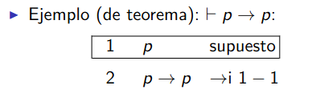
import Mathlib.Tactic variable (P : Prop) -- 1ª demostración example : P → P := by intro h -- h : P -- ⊢ P exact h -- 2ª demostración example : P → P := fun h ↦ h -- 3ª demostración example : P → P := id
ej_cond_3 :: p -> p ej_cond_3 = id -- λ> :t ej_cond_3 -- ej_cond_3 :: p -> p
3.2. Pruebas de P → (Q → P)
- Prueba por deducción natural de P → (Q → P)
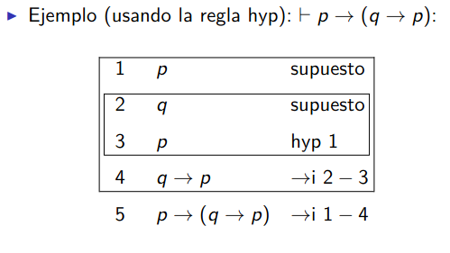
import Mathlib.Tactic variable (P Q : Prop) -- 1ª demostración example : P → (Q → P) := by intro h1 -- h1 : P -- ⊢ Q → P intro _h2 -- _h2 : Q -- ⊢ P exact h1 -- 2ª demostración example : P → (Q → P) := by intros h1 _h2 -- h1 : P -- _h2 : Q -- ⊢ P exact h1 -- 3ª demostración example : P → (Q → P) := fun h1 _ ↦ h1
ej_cond_4 :: p -> (q -> p) ej_cond_4 h _ = h -- λ> :t ej_cond_4 -- ej_cond_4 :: p -> q -> p
3.3. Pruebas de P → Q, Q → R ⊢ P → R
import Mathlib.Tactic variable (P Q R : Prop) -- 1º demostración example (h1 : P → Q) (h2 : Q → R) : P → R := by intro h -- h : P -- ⊢ R apply h2 -- ⊢ Q apply h1 -- ⊢ P exact h -- 2º demostración example (h1 : P → Q) (h2 : Q → R) : P → R := fun h ↦ h2 (h1 h) -- 3º demostración example (h1 : P → Q) (h2 : Q → R) : P → R := h2 ∘ h1
ej_cond_5 :: (p -> q) -> (q -> r) -> (p -> r) ej_cond_5 h1 h2 = h2 . h1 -- λ> :t ej_cond_5 -- ej_cond_5 :: (p -> q) -> (q -> r) -> p -> r
3.4. Correspondencia entre Lógica y Haskell
| Lógica | Haskell |
|---|---|
| Proposiciones | Tipos |
| P -> Q | P -> Q |
| (E→) f : P → Q, p : P ⊢ Q | f p |
| (I→) (h : P ⊢ Q) ⊢ P → Q | \p -> h p |
4. Reglas de la conjunción
4.1. Pruebas de P ∧ Q, R ⊢ Q ∧ R
- Prueba por deducción natural de P ∧ Q, R ⊢ Q ∧ R
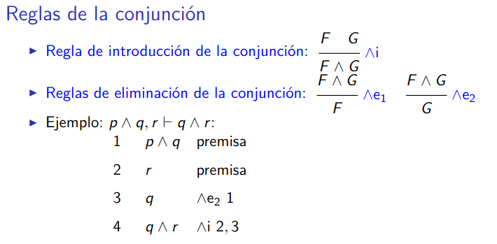
import Mathlib.Tactic variable (P Q R : Prop) -- 1ª demostración example (hPQ : P ∧ Q) (hR : R) : Q ∧ R := by have hQ : Q := And.right hPQ show Q ∧ R exact And.intro hQ hR -- 2ª demostración example (hPQ : P ∧ Q) (hR : R) : Q ∧ R := by have hQ : Q := hPQ.2 show Q ∧ R exact ⟨hQ, hR⟩ -- 3ª demostración example (hPQ : P ∧ Q) (hR : R) : Q ∧ R := ⟨hPQ.2, hR⟩
ej_conj_1 :: (p, q) -> r -> (q, r) ej_conj_1 hpq hr = (snd hpq, hr) -- λ> :t ej_conj_1 -- ej_conj_1 :: (p, q) -> r -> (q, r)
4.2. Correspondencia entre Lógica y Haskell
| Lógica | Haskell |
|---|---|
| Proposiciones | Tipos |
| P -> Q | P -> Q |
| P ∧ Q | (P, Q) |
| (E→) f : P → Q, p : P ⊢ Q | f p |
| (I→) (h : P ⊢ Q) ⊢ P → Q | \p -> h p |
| (I∧) p: P, q : Q ⊢ P ∧ Q | (p, q) |
| (E∧1) h : P ∧ Q | fst h |
| (E∧2) h : P ∧ Q | snd h |
4.3. Pruebas de P ∧ Q → Q ∧ P
import Mathlib.Tactic variable (P Q : Prop) -- 1ª demostración example : P ∧ Q → Q ∧ P := by intro h -- h : P ∧ Q -- ⊢ Q ∧ P exact ⟨h.2, h.1⟩ -- 2ª demostración example : P ∧ Q → Q ∧ P := fun h ↦ ⟨h.2, h.1⟩
ej_conj_2 :: (p, q) -> (q, p) ej_conj_2 = \ h -> (snd h, fst h) ej_conj_2b :: (p, q) -> (q, p) ej_conj_2b h = (snd h, fst h) ej_conj_2c :: (p, q) -> (q, p) ej_conj_2c = \ (hp, hq) -> (hq, hp) ej_conj_2d :: (p, q) -> (q, p) ej_conj_2d (hp, hq) = (hq, hp) -- λ> :t ej_conj_2 -- ej_conj_2 :: (p, q) -> (q, p) -- λ> :t ej_conj_2b -- ej_conj_2b :: (p, q) -> (q, p) -- λ> :t ej_conj_2c -- ej_conj_2c :: (p, q) -> (q, p) -- λ> :t ej_conj_2d -- ej_conj_2d :: (p, q) -> (q, p)
5. Reglas de la negación
5.1. Reglas de la negación en deducción natural
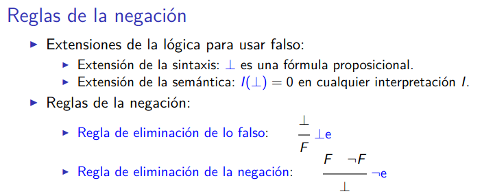
5.2. Pruebas de ⊥ ⊢ P
import Mathlib.Tactic variable (P Q : Prop) -- 1ª demostración example (h : False) : Q := False.elim h -- 2ª demostración example (h : False) : Q := by cases h
import Data.Void falseElim :: Void -> a falseElim = absurd -- λ> :t falseElim -- falseElim :: Void -> a
- Nota: En este enlace hay información sobre el tipo
Void.
5.3. Correspondencia entre Lógica y Haskell
| Lógica | Haskell |
|---|---|
| Proposiciones | Tipos |
| P -> Q | P -> Q |
| P ∧ Q | (P, Q) |
| False | Void |
| (E→) f : P → Q, p : P ⊢ Q | f p |
| (I→) (h : P ⊢ Q) ⊢ P → Q | \p -> h p |
| (I∧) p: P, q : Q ⊢ P ∧ Q | (p, q) |
| (E∧1) h : P ∧ Q | fst h |
| (E∧2) h : P ∧ Q | snd h |
| (E⊥) ⊥ ⊢ P | absurd |
5.4. Pruebas de la eliminación de la negación P, ¬P ⊢ ⊥
import Mathlib.Tactic variable (P Q : Prop) -- 1ª demostración example (h1: P) (h2: ¬P) : False := by apply h2 -- ⊢ P exact h1 -- 2ª demostración example (h1: P) (h2: ¬P) : False := h2 h1
import Data.Void type Neg p = p -> Void ej_neg_1 :: p -> Neg p -> Void ej_neg_1 h1 h2 = h2 h1 -- λ> :t ej_neg_1 -- ej_neg_1 :: p -> Neg p -> Void
5.5. Correspondencia entre Lógica y Haskell
| Lógica | Haskell |
|---|---|
| Proposiciones | Tipos |
| P -> Q | P -> Q |
| P ∧ Q | (P, Q) |
| False | Void |
| ¬P | P -> Void |
| (E→) f : P → Q, p : P ⊢ Q | f p |
| (I→) (h : P ⊢ Q) ⊢ P → Q | \p -> h p |
| (I∧) p: P, q : Q ⊢ P ∧ Q | (p, q) |
| (E∧1) h : P ∧ Q | fst h |
| (E∧2) h : P ∧ Q | snd h |
| (E⊥) ⊥ ⊢ P | absurd |
| (E¬) h1 : P, h2 : ¬P ⊢ ⊥ | h2 h1 |
5.6. Pruebas de ¬(P ∧ ¬P)
import Mathlib.Tactic variable (P : Prop) -- 1ª demostración example : ¬(P ∧ ¬P) := by intro h -- h : P ∧ ¬P -- ⊢ False exact h.2 h.1 -- 2ª demostración example : ¬(P ∧ ¬P) := fun h ↦ h.2 h.1 -- 3ª demostración example : ¬(P ∧ ¬P) := by rintro ⟨h1, h2⟩ -- h1 : P -- h2 : ¬P -- ⊢ False exact h2 h1 -- 4ª demostración example : ¬(P ∧ ¬P) := fun ⟨h1, h2⟩ ↦ h2 h1
import Data.Void type Neg p = p -> Void ej_neg_2 :: Neg (p, Neg p) ej_neg_2 h = snd h (fst h) ej_neg_2b :: Neg (p, Neg p) ej_neg_2b (h1, h2) = h2 h1 -- λ> :t ej_neg_2 -- ej_neg_2 :: Neg (p, Neg p) -- λ> :t ej_neg_2b -- ej_neg_2b :: Neg (p, Neg p)
5.7. Pruebas de P → Q, P → ¬Q ⊢ ¬P
- Pruebas con deducción natural de P → Q, P → ¬Q ⊢ ¬P
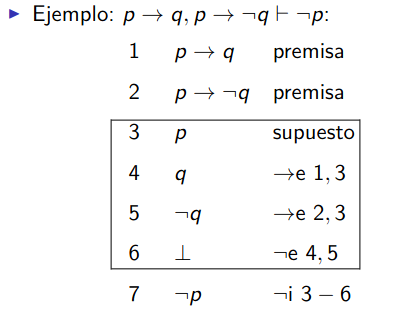
import Mathlib.Tactic variable (P Q : Prop) -- 1ª demostración example (h1 : P → Q) (h2 : P → ¬Q) : ¬P := by intro h3 -- h3 : P -- ⊢ False have h4 : Q := h1 h3 have h5 : ¬Q := h2 h3 show False exact h5 h4 -- 2ª demostración example (h1 : P → Q) (h2 : P → ¬Q) : ¬P := fun h3 ↦ (h2 h3) (h1 h3)
import Data.Void type Neg p = p -> Void ej_neg_3 :: (p -> q) -> (p -> Neg q) -> Neg p ej_neg_3 h1 h2 = \ h3 -> (h2 h3) (h1 h3) ej_neg_3b :: (p -> q) -> (p -> Neg q) -> Neg p ej_neg_3b h1 h2 h3 = (h2 h3) (h1 h3) -- λ> :t ej_neg_3 -- ej_neg_3 :: (p -> q) -> (p -> Neg q) -> Neg p -- λ> :t ej_neg_3b -- ej_neg_3b :: (p -> q) -> (p -> Neg q) -> Neg p
5.8. Pruebas del modus tollens: P → Q, ¬Q ⊢ ¬P
- Pruebas con deducción natural del modus tollens: P → Q, ¬Q ⊢ ¬P
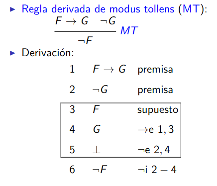
import Mathlib.Tactic variable (P Q : Prop) -- 1ª demostración example (h1 : P → Q) (h2 : ¬Q) : ¬P := by intro h3 -- h3 : P -- ⊢ False apply h2 -- ⊢ Q apply h1 -- ⊢ P exact h3 -- 2ª demostración example (h1 : P → Q) (h2 : ¬Q) : ¬P := fun h3 ↦ h2 (h1 h3) -- 3ª demostración example (h1 : P → Q) (h2 : ¬Q) : ¬P := h2 ∘ h1
import Data.Void type Neg p = p -> Void ej_neg_4 :: (p -> q) -> (Neg q -> Neg p) ej_neg_4 h1 h2 h3 = h2 (h1 h3) ej_neg_4b :: (p -> q) -> (Neg q -> Neg p) ej_neg_4b h1 h2 = h2 . h1 -- λ> :t ej_neg_4 -- ej_neg_4 :: (p -> q) -> Neg q -> Neg p -- λ> :t ej_neg_4b -- ej_neg_4b :: (p -> q) -> Neg q -> Neg p
5.9. Pruebas de P → (Q → R), P, ¬R ⊢ ¬Q
- Prueba con deducción natural de P → (Q → R), P, ¬R ⊢ ¬Q
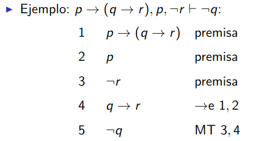
import Mathlib.Tactic variable (P Q R : Prop) -- 1ª demostración example (h1 : P → (Q → R)) (h2 : P) (h3 : ¬R) : ¬Q := by intro h4 -- h4 : Q -- ⊢ False apply h3 -- ⊢ R apply (h1 h2) -- ⊢ Q exact h4 -- 2ª demostración example (h1 : P → (Q → R)) (h2 : P) (h3 : ¬R) : ¬Q := fun h4 ↦ h3 ((h1 h2) h4)
import Data.Void type Neg p = p -> Void ej_neg_5 :: (p -> (q -> r)) -> p -> Neg r -> Neg q ej_neg_5 h1 h2 h3 h4 = h3 (h1 h2 h4) -- λ> :t ej_neg_5 -- ej_neg_5 :: (p -> q -> r) -> p -> Neg r -> Neg q
5.10. Regla de introducción de la doble negación: P ⊢ ¬¬P
- Prueba con deducción natural de la introducción de la doble negación: P ⊢ ¬¬P
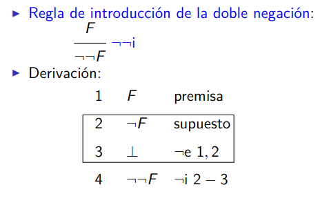
import Mathlib.Tactic variable (P : Prop) -- 1ª demostración example (h1 : P) : ¬¬P := by intro h2 -- h2 : ¬P -- ⊢ False exact h2 h1 -- 2ª demostración example (h1 : P) : ¬¬P := fun h2 ↦ h2 h1
import Data.Void type Neg p = p -> Void not_not_I :: p -> Neg (Neg p) not_not_I h1 h2 = h2 h1 -- λ> :t not_not_I -- not_not_I :: p -> Neg (Neg p)
5.11. Pruebas de ¬Q → ¬P ⊢ P → ¬¬Q
- Pruebas con deducción natural de ¬Q → ¬P ⊢ P → ¬¬Q
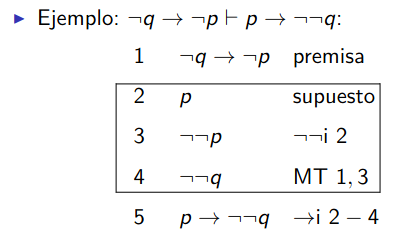
import Mathlib.Tactic variable (P Q : Prop) -- 1ª demostración example (h1 : ¬Q → ¬P) : P → ¬¬Q := by intros h2 h3 -- h2 : P -- h3 : ¬Q -- ⊢ False apply h1 h3 -- ⊢ P exact h2 -- 2ª demostración example (h1 : ¬Q → ¬P) : P → ¬¬Q := fun h2 h3 ↦ (h1 h3) h2
import Data.Void type Neg p = p -> Void ej_neg_7 :: (Neg q -> Neg p) -> (p -> Neg (Neg q)) ej_neg_7 h1 h2 h3 = (h1 h3) h2 -- λ> :t ej_neg_7 -- ej_neg_7 :: (Neg q -> Neg p) -> p -> Neg (Neg q)
6. Reglas de la disyunción
6.1. Pruebas de la introducción de la disyunción
- Reglas de introducción de la disyunción
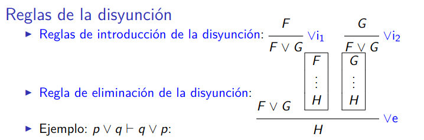
import Mathlib.Tactic variable (P Q R : Prop) -- 1ª regla de introducción example (h : P) : P ∨ Q := Or.inl h -- 2ª regla de introducción example (h : Q) : P ∨ Q := Or.inr h
orInl :: p -> Either p q orInl = Left orInr :: q -> Either p q orInr = Right -- λ> :t orInl -- orInl :: p -> Either p q -- λ> :t orInr -- orInr :: q -> Either p q
6.2. Correspondencia entre Lógica y Haskell
| Lógica | Haskell |
|---|---|
| Proposiciones | Tipos |
| P -> Q | P -> Q |
| P ∧ Q | (P, Q) |
| False | Void |
| ¬P | P -> Void |
| P ∨ Q | Either P Q |
| (E→) f : P → Q, p : P ⊢ Q | f p |
| (I→) (h : P ⊢ Q) ⊢ P → Q | \p -> h p |
| (I∧) p: P, q : Q ⊢ P ∧ Q | (p, q) |
| (E∧1) h : P ∧ Q | fst h |
| (E∧2) h : P ∧ Q | snd h |
| (E⊥) ⊥ ⊢ P | absurd |
| (E¬) h1 : P, h2 : ¬P ⊢ ⊥ | h2 h1 |
| (I∨1) P ⊢ P ∨ Q | Left |
| (I∨2) P ⊢ P ∨ Q | Right |
6.3. Pruebas de P ∧ Q ⊢ P ∨ R
import Mathlib.Tactic variable (P Q R : Prop) -- 1ª demostración example (h : P ∧ Q) : P ∨ R := by left -- ⊢ P exact h.1 -- 2ª demostración example (h : P ∧ Q) : P ∨ R := Or.inl h.1 -- 3ª demostración example : P ∧ Q → P ∨ R := by rintro ⟨h1, -⟩ -- h1 : P -- ⊢ P ∨ R exact Or.inl h1 -- 4ª demostración example : P ∧ Q → P ∨ R := fun ⟨h1, _⟩ ↦ Or.inl h1
ej_dis_2 :: (p,q) -> Either p r ej_dis_2 h = Left (fst h) ej_dis_2b :: (p,q) -> Either p r ej_dis_2b (h,_) = Left h -- λ> :t ej_dis_2 -- ej_dis_2 :: (p, q) -> Either p r -- λ> :t ej_dis_2b -- ej_dis_2b :: (p, q) -> Either p r
6.4. Pruebas de P ∧ Q ⊢ R ∨ Q
import Mathlib.Tactic variable (P Q R : Prop) -- ---------------------------------------------------- -- Ej. 4. Demostrar -- P ∧ Q ⊢ R ∨ Q -- ---------------------------------------------------- -- 1ª demostración example (h : P ∧ Q) : R ∨ Q := by right -- ⊢ Q exact h.2 -- 2ª demostración example (h : P ∧ Q) : R ∨ Q := Or.inr h.2 -- 3ª demostración example : P ∧ Q → R ∨ Q := by rintro ⟨-, h2⟩ -- h2 : Q -- ⊢ R ∨ Q exact Or.inr h2 -- 4ª demostración example : P ∧ Q → R ∨ Q := fun ⟨_, h2⟩ ↦ Or.inr h2
ej_dis_3 :: (p,q) -> Either r q ej_dis_3 h1 = Right (snd h1) ej_dis_3b :: (p,q) -> Either r q ej_dis_3b (_,h) = Right h -- λ> :t ej_dis_3 -- ej_dis_3 :: (p, q) -> Either r q -- λ> :t ej_dis_3b -- ej_dis_3b :: (p, q) -> Either r q
6.5. Regla de eliminación de la disyunción
- Regla de eliminación de la disyunción en deducción natural
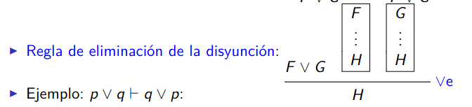
import Mathlib.Tactic variable (P Q R : Prop) -- 1ª demostración example (h : P ∨ Q) (h1 : P → R) (h2 : Q → R) : R := by cases' h with hP hQ . -- hP : P exact h1 hP . -- hQ : Q exact h2 hQ -- 2ª demostración example (h : P ∨ Q) (h1 : P → R) (h2 : Q → R) : R := match h with | Or.inl h => h1 h | Or.inr h => h2 h -- 3ª demostración example (h1 : P ∨ Q) (h2 : P → R) (h3 : Q → R) : R := Or.elim h1 h2 h3
orElim :: Either p q -> (p -> r) -> (q -> r) -> r orElim (Left h) h2 _ = h2 h orElim (Right h) _ h3 = h3 h
6.6. Correspondencia entre Lógica y Haskell
| Lógica | Haskell |
|---|---|
| Proposiciones | Tipos |
| P -> Q | P -> Q |
| P ∧ Q | (P, Q) |
| False | Void |
| ¬P | P -> Void |
| P ∨ Q | Either P Q |
| (E→) f : P → Q, p : P ⊢ Q | f p |
| (I→) (h : P ⊢ Q) ⊢ P → Q | \p -> h p |
| (I∧) p: P, q : Q ⊢ P ∧ Q | (p, q) |
| (E∧1) h : P ∧ Q | fst h |
| (E∧2) h : P ∧ Q | snd h |
| (E⊥) ⊥ ⊢ P | absurd |
| (E¬) h1 : P, h2 : ¬P ⊢ ⊥ | h2 h1 |
| (I∨1) P ⊢ P ∨ Q | Left |
| (I∨2) P ⊢ P ∨ Q | Right |
| (E∨) h : P ∨ Q, h1 : P → R, h2 : Q → R ⊢ R | f (Left h) h1 _ = h1 h |
| f (Right h) _ h2 = h2 h |
6.7. Pruebas de P ∨ Q ⊢ Q ∨ P
- Prueba con deducción natural de P ∨ Q ⊢ Q ∨ P
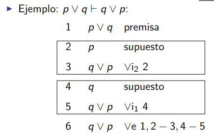
import Mathlib.Tactic variable (P Q R : Prop) -- 1ª demostración example (h : P ∨ Q) : Q ∨ P := by apply Or.elim h . -- ⊢ P → Q ∨ P exact Or.inr . -- ⊢ Q → Q ∨ P exact Or.inl -- 2ª demostración example (h : P ∨ Q) : Q ∨ P := Or.elim h Or.inr Or.inl -- 3ª demostración example (h : P ∨ Q) : Q ∨ P := match h with | Or.inl h => Or.inr h | Or.inr h => Or.inl h
orElim :: Either p q -> (p -> r) -> (q -> r) -> r orElim (Left h) h1 _ = h1 h orElim (Right h) _ h2 = h2 h ej_dis_4 :: Either p q -> Either q p ej_dis_4 h = orElim h Right Left ej_dis_4b :: Either p q -> Either q p ej_dis_4b (Left h) = Right h ej_dis_4b (Right h) = Left h -- λ> :t ej_dis_4 -- ej_dis_4 :: Either p q -> Either q p -- λ> :t ej_dis_4b -- ej_dis_4b :: Either p q -> Either q p
6.8. Pruebas de Q → R ⊢ P ∨ Q → P ∨ R
- Pruebas con deducción natural de Q → R ⊢ P ∨ Q → P ∨ R
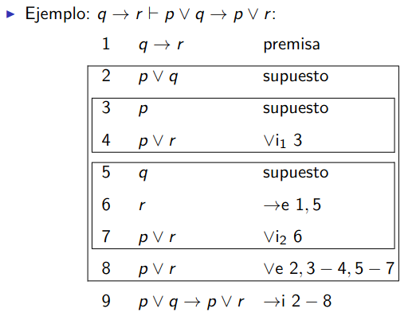
import Mathlib.Tactic variable (P Q R : Prop) -- 1ª demostración example (h : Q → R) : P ∨ Q → P ∨ R := by intro h1 -- h1 : P ∨ Q -- ⊢ P ∨ R apply Or.elim h1 . -- ⊢ P → P ∨ R exact Or.inl . -- ⊢ Q → P ∨ R intro h2 -- h2 : Q -- ⊢ P ∨ R apply Or.inr -- ⊢ R exact h h2 -- 2ª demostración example (h : Q → R) : P ∨ Q → P ∨ R := by intro h1 -- h1 : P ∨ Q -- ⊢ P ∨ R apply Or.elim h1 . -- ⊢ P → P ∨ R exact Or.inl . exact (fun h2 ↦ Or.inr (h h2)) -- 3ª demostración example (h : Q → R) : P ∨ Q → P ∨ R := by intro h1 -- h1 : P ∨ Q -- ⊢ P ∨ R apply Or.elim h1 . -- ⊢ P → P ∨ R exact Or.inl . exact Or.inr ∘ h -- 4ª demostración example (h : Q → R) : P ∨ Q → P ∨ R := fun h1 ↦ Or.elim h1 Or.inl (Or.inr ∘ h)
orElim :: Either p q -> (p -> r) -> (q -> r) -> r orElim (Left h) h2 _ = h2 h orElim (Right h) _ h3 = h3 h ej_dis_5 :: (q -> r) -> Either p q -> Either p r ej_dis_5 h h1 = orElim h1 Left (Right . h) -- λ> :t ej_dis_5 -- ej_dis_5 :: (q -> r) -> Either p q -> Either p r
6.9. Pruebas de ¬P ∨ Q ⊢ P → Q
- Pruebas con deducción natural de ¬P ∨ Q ⊢ P → Q
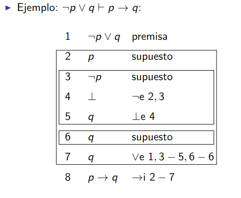
import Mathlib.Tactic variable (P Q : Prop) -- 1ª demostración example (h : ¬P ∨ Q) : P → Q := by intro h1 -- h1 : P -- ⊢ Q apply Or.elim h . -- ⊢ ¬P → Q intro h2 -- h2 : ¬P -- ⊢ Q apply False.elim -- False exact h2 h1 . -- ⊢ Q → Q exact id -- 2ª demostración example (h : ¬P ∨ Q) : P → Q := fun h1 ↦ Or.elim h (fun h3 ↦ False.elim (h3 h1)) id
import Data.Void type Neg p = p -> Void orElim :: Either p q -> (p -> r) -> (q -> r) -> r orElim (Left h) h2 _ = h2 h orElim (Right h) _ h3 = h3 h ej_dis_6 :: Either (Neg p) q -> (p -> q) ej_dis_6 h h1 = orElim h (\h2 -> absurd (h2 h1)) id
7. Reglas de la lógica clásica
7.1. Pruebas con Lean de la eliminación de la doble negación
import Mathlib.Tactic variable (P : Prop) open Classical -- 1ª demostración example (h : ¬¬P) : P := by by_contra h1 -- h1 : ¬P -- ⊢ False exact h h1 -- 2ª demostración example (h : ¬¬P) : P := byContradiction (fun h1 => h h1)
7.2. uPruebas con Lean de la regla de reducción al absurdo
import Mathlib.Tactic variable (P : Prop) open Classical -- 1ª demostración example (h : ¬P → False) : P := by by_contra h1 -- h1 : ¬P -- ⊢ False exact h h1 -- 1ª demostración example (h : ¬P → False) : P := byContradiction (fun h1 ↦ h h1)
7.3. Pruebas con Lean del principio del tercio excluso
import Mathlib.Tactic variable (F : Prop) open Classical -- 1ª demostración example : F ∨ ¬F := by by_contra h1 -- h1 : ¬(F ∨ ¬F) -- ⊢ False apply h1 -- ⊢ F ∨ ¬F left -- ⊢ F by_contra h2 apply h1 -- ⊢ F ∨ ¬F right -- ⊢ ¬F exact h2 -- 2ª demostración example : F ∨ ¬F := byContradiction (fun h1 ↦ h1 (Or.inl (byContradiction (fun h2 ↦ h1 (Or.inr h2)))))
7.4. Pruebas con Lean de P → Q ⊢ ¬P ∨ Q
import Mathlib.Tactic variable (P Q : Prop) open Classical -- 1ª demostración example (h : P → Q) : ¬P ∨ Q := by by_cases h1 : P . -- h1 : P right -- ⊢ Q exact h h1 . -- h1 : ¬P left -- ⊢ ¬P exact h1 -- 2ª demostración example (h : P → Q) : ¬P ∨ Q := Classical.by_cases (fun h1 ↦ Or.inr (h h1)) (fun h1 ↦ Or.inl h1) -- 3ª demostración example (h : P → Q) : ¬P ∨ Q := Classical.by_cases (Or.inr ∘ h) Or.inl
7.5. Pruebas con Lean de P, ¬¬(Q ∧ R) ⊢ ¬¬P ∧ R
import Mathlib.Tactic variable (P Q R : Prop) open Classical -- 1ª demostración example (h1 : P) (h2 : ¬¬(Q ∧ R)) : ¬¬P ∧ R := by constructor . -- ⊢ ¬¬P exact not_not_intro h1 . -- ⊢ R exact (not_not.mp h2).2 -- 2ª demostración example (h1 : P) (h2 : ¬¬(Q ∧ R)) : ¬¬P ∧ R := ⟨not_not_intro h1, (not_not.mp h2).right⟩
7.6. Pruebas con Lean de ¬P → Q, ¬Q ⊢ P
import Mathlib.Tactic variable (P Q : Prop) open Classical -- 1ª demostración example (h1 : ¬P → Q) (h2 : ¬Q) : P := by by_contra h3 -- h3 : ¬P -- ⊢ False apply h2 -- ⊢ Q exact h1 h3 -- 2ª demostración example (h1 : ¬P → Q) (h2 : ¬Q) : P := by_contra (fun h3 ↦ h2 (h1 h3)) -- 3ª demostración example (h1 : ¬P → Q) (h2 : ¬Q) : P := by_contra (h2 ∘ h1)
7.7. Pruebas con Lean de (Q → R) → ((¬Q → ¬P) → (P → R))
import Mathlib.Tactic variable (P Q R : Prop) -- 1ª demostración example : (Q → R) → ((¬Q → ¬P) → (P → R)) := by intros h1 h2 h3 -- h1 : Q → R -- h2 : ¬Q → ¬P -- h3 : P -- ⊢ R apply h1 -- ⊢ Q apply not_not.mp -- ⊢ ¬¬Q apply mt h2 -- ⊢ ¬¬P exact not_not_intro h3 -- 2ª demostración example : (Q → R) → ((¬Q → ¬P) → (P → R)) := fun h1 h2 h3 ↦ h1 (not_not.mp (mt h2 (not_not_intro h3)))